Nuvola2DXF (NDXF) – guida all'uso
Piante, sezioni e prospetti in DXF dalle nuvole di punti del laser scanner · versione 1.3.0
Nuvola2DXF trasforma una nuvola di punti (per esempio un rilievo con Trimble X7 o X9) in disegni DXF pronti per il CAD: piante, sezioni e prospetti, con le linee già unite negli spigoli e gli elementi già divisi in layer (muri, porte, finestre, pilastri, pavimenti, soffitti, parti in legno…). Il programma fa il grosso del lavoro; a te resta il controllo in CAD dei punti che ti segnala.
Indice
- Scaricare e avviare il programma
- La finestra in breve
- Passo 1 – Aprire la nuvola
- Passo 2 – Pianta
- Passo 2 – Sezione
- Passo 2 – Prospetto
- Passo 3 – Tipo di edificio
- Estrarre e controllare il risultato
- Porte e finestre
- Passo 4 – Tagli, nomi ed esportazione DXF
- Tabià e strutture in legno
- Il lavoro in CAD: cosa controllare
- Regolazioni fini
- Analisi del fuori piombo
- Problemi frequenti
- Consigli per il rilievo
1. Scaricare e avviare il programma
Il programma è un solo file: non si installa. Scarica quello adatto al tuo PC dalla pagina Nuvola2DXF 1.3.0:
| Il tuo PC | File da scaricare |
|---|---|
| Windows 10 o 11 (64 bit) | Nuvola2DXF.exe |
| Windows 7 o 8.1 (64 bit) | Nuvola2DXF-Windows7.exe |
- Copia il file in una cartella comoda (per esempio
Documenti\Programmi) e crea un collegamento sul desktop. - Avvialo con un doppio clic. La prima volta Windows può mostrare l'avviso «Windows ha protetto il PC»: clicca Ulteriori informazioni e poi Esegui comunque.
- L'avvio richiede qualche secondo: il programma si prepara da solo.
2. La finestra in breve
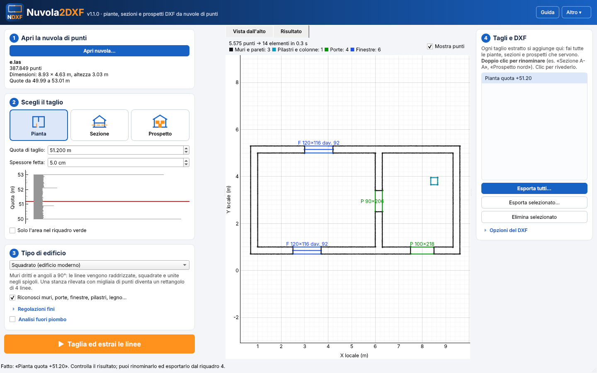
| Zona | A cosa serve |
|---|---|
| 1Apri la nuvola | Apre il file del rilievo e ne mostra numero di punti, dimensioni e quote. |
| 2Scegli il taglio | Pianta, Sezione o Prospetto, con le relative impostazioni. |
| 3Tipo di edificio | Come ricostruire le linee: squadrato, prevalentemente dritto, storico, tabià/legno. |
| Pulsante arancione | Taglia ed estrai le linee: fa il taglio scelto. |
| Centro | Vista dall'alto della nuvola (dove si tracciano sezioni e prospetti) e Risultato con le linee estratte. |
| 4Tagli e DXF | Elenco di tutti i tagli fatti: si rinominano e si esportano in DXF. |
| Guida · Altro ▾ | In alto a destra: guida rapida, nomi dei layer, svuota archivio temporaneo. |
3. Passo 1 – Aprire la nuvola
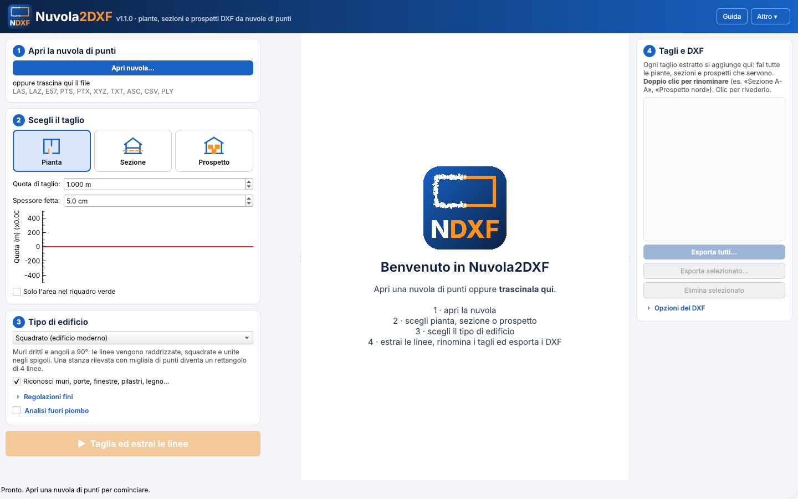
- Premi Apri nuvola… oppure trascina il file nella finestra.
- Formati letti: E57, LAS, LAZ, PTS, PTX, XYZ/TXT/ASC/CSV, PLY. Dal software dello scanner (Trimble RealWorks, Trimble Business Center…) esporta preferibilmente in E57 o LAS/LAZ, con le coordinate del rilievo.
- La prima apertura di un file grande può richiedere parecchi minuti, a seconda della dimensione del file e del PC: il programma lo converte una volta sola in un formato veloce. La barra in basso mostra l'avanzamento; con Annulla ti fermi. Dalla volta dopo lo stesso file si apre subito.
%LOCALAPPDATA%\Nuvola2DXF\cache. Quando un lavoro è finito puoi liberare spazio con
Altro ▾ → Svuota archivio temporaneo.4. Passo 2 – Pianta
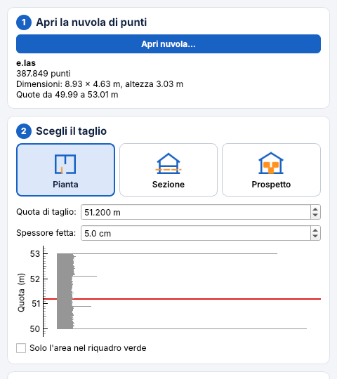
- Premi Pianta.
- Quota di taglio: il programma propone pavimento + 1 m. Nel grafico grigio i picchi sono pavimenti e soffitti: trascina la linea rossa alla quota voluta, di solito 1,00-1,20 m sopra il pavimento, così il taglio passa nelle finestre.
- Spessore fetta: 3-5 cm vanno bene quasi sempre. Aumentalo (8-10 cm) solo se la nuvola è rada.
- Con Solo l'area nel riquadro verde lavori solo su una parte (un appartamento, un piano): il riquadro si sposta e si allarga sulla Vista dall'alto. È più veloce e più pulito.
5. Passo 2 – Sezione
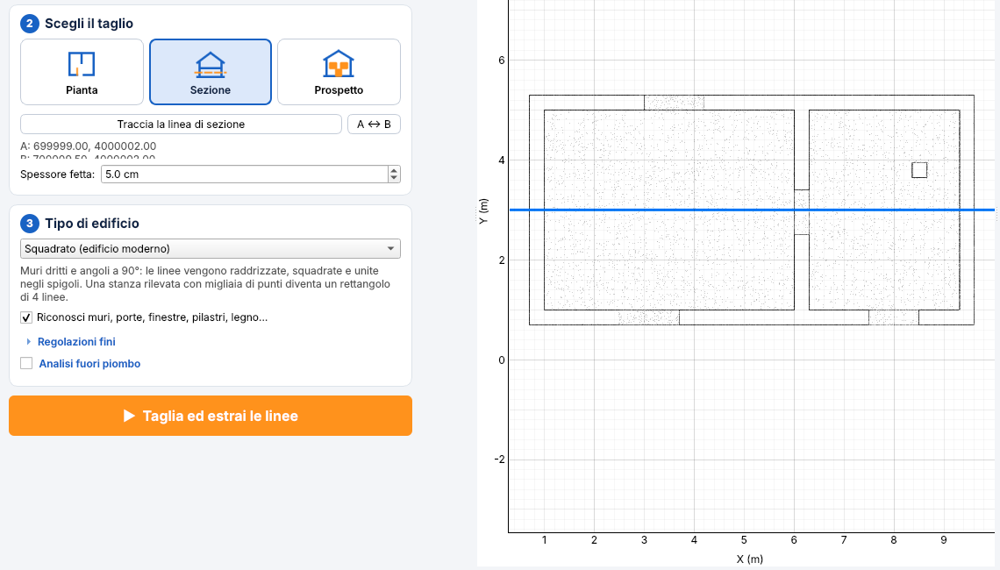
- Premi Sezione e poi Traccia la linea di sezione.
- Sulla Vista dall'alto clicca il punto di inizio A e il punto di fine B. Con la rotella del mouse ingrandisci, tenendo premuto il tasto sinistro sposti la vista.
- Si guarda la sezione stando a destra della freccia A → B. Per guardarla dall'altra parte premi A ↔ B.
- Spessore fetta: 3-5 cm.
6. Passo 2 – Prospetto
- Premi Prospetto e poi Traccia la facciata.
- Clicca A e B lungo la facciata, da sinistra a destra come la vede chi la guarda da fuori. Con Allinea la linea alla facciata più vicina attivo, la linea si raddrizza da sola sulla facciata.
- Profondità davanti: quanto prendere davanti alla facciata (balconi, cornici, pensiline). Profondità dietro: quanto prendere dietro (rientranze, serramenti).
- Il programma riconosce da che parte guarda la facciata e propone già il nome: «Prospetto nord», «Prospetto sud-est»…
Anteprima del taglio e vista 3D
Prima di estrarre vedi esattamente quali punti prenderà il taglio: sulla Vista dall'alto la nuvola diventa sbiadita e la fetta (o la fascia della sezione) è in grigio scuro; sotto la mappa la fetta compare da sola, con la stima dei punti. Muovendo la quota, lo spessore o la linea A-B l'anteprima segue subito. Anteprima precisa legge la fetta vera a piena risoluzione; se poi estrai con le stesse impostazioni non viene riletta. La scheda Vista 3D mostra la nuvola in assonometria con il piano di taglio (trascina per ruotare, rotella per ingrandire) e in rosso i punti presi.
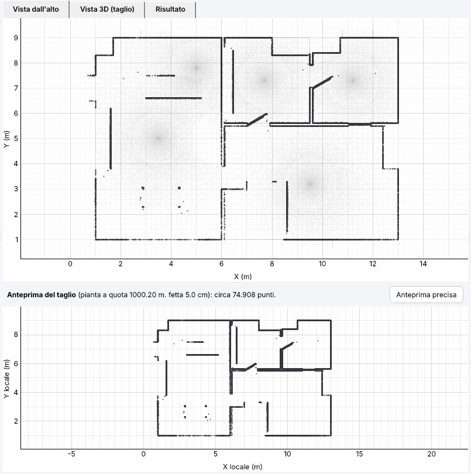
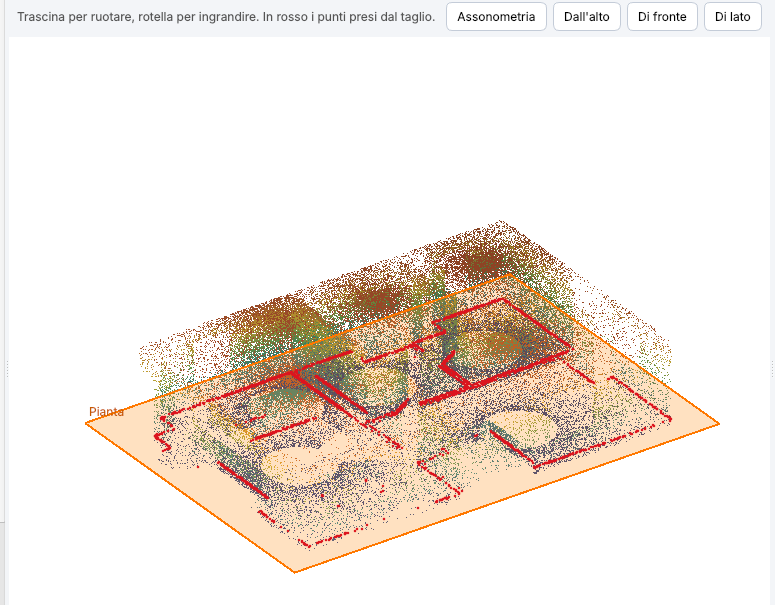
7. Passo 3 – Tipo di edificio
Scegli il tipo più vicino all'edificio rilevato: cambia il modo in cui le linee vengono ricostruite.
| Tipo | Quando usarlo | Cosa fa |
|---|---|---|
| Squadrato | Edifici moderni, muri dritti e angoli retti | Linee dritte, angoli quasi retti portati a 90°, spigoli uniti. Una stanza diventa un rettangolo di 4 linee. |
| Prevalentemente dritto | Muri dritti ma angoli qualsiasi | Linee dritte e parallele, senza forzare l'angolo retto. |
| Storico / irregolare | Chiese, absidi, archi, volte, colonne, murature irregolari | Segue il contorno con tratti dritti, archi e cerchi. |
| Tabià / strutture in legno | Tabià, fienili, ballatoi, coperture in legno | Segue anche le tavole sottili (2-4 cm, a doppia linea), travi e puntoni inclinati; mette tavolati, travi e ballatoi in layer separati (vedi capitolo 11). |
Lascia attivo Riconosci muri, porte, finestre, pilastri, legno…: divide il disegno nei layer.
Ricostruzione: matematica o intuitiva
| Metodo | Come lavora | Quando usarlo |
|---|---|---|
| Matematica | Disegna quello che c'è nella fetta alla quota di taglio: linee molto fedeli ai punti. Dove armadi e oggetti nascondono i muri, li richiude sul prolungamento dei muri (layer da verificare). | Rilievi puliti, pochi mobili; edifici senza soffitto piano. |
| Intuitiva | Si "guarda attorno" come una persona: trova pavimento e soffitto, ricava i muri dalla fascia appena sotto il soffitto (dove non ci sono mobili), guarda ogni muro per intero per trovare porte e finestre (un oggetto davanti non è un vano; se dall'altro lato il muro è pieno non c'è un vano) e chiude le stanze. Gli arredi non vengono disegnati. | Stanze arredate, muri nascosti, quando il metodo matematico lascia buchi. Serve il soffitto rilevato. Per ora solo in pianta. |
Puoi fare la stessa pianta con tutti e due i metodi: nell'elenco dei tagli quella intuitiva ha il nome che finisce con «intuitiva». Esporta quella che ti convince di più.
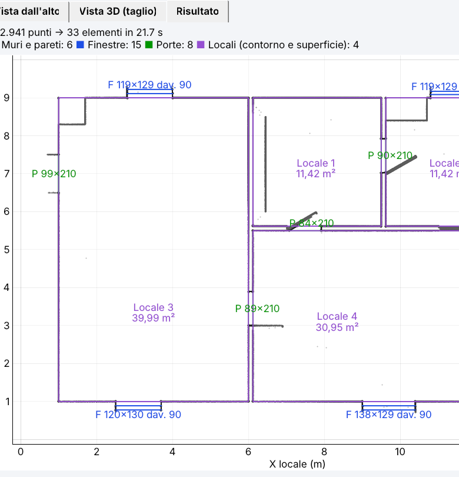
Locali
In pianta ogni stanza diventa un contorno chiuso nel layer 00_locali, con nome e
superficie («Locale 1 – 18,40 m²»). Il contorno segue le facce dei muri; dove una linea di muro manca, viene aggiunta
una chiusura sul prolungamento del muro fino allo spigolo geometrico (layer da verificare).
8. Estrarre e controllare il risultato
Premi il pulsante arancione Taglia ed estrai le linee. In pochi secondi si apre la scheda Risultato: in grigio i punti, colorate le linee estratte, in alto il conteggio per tipo di elemento.
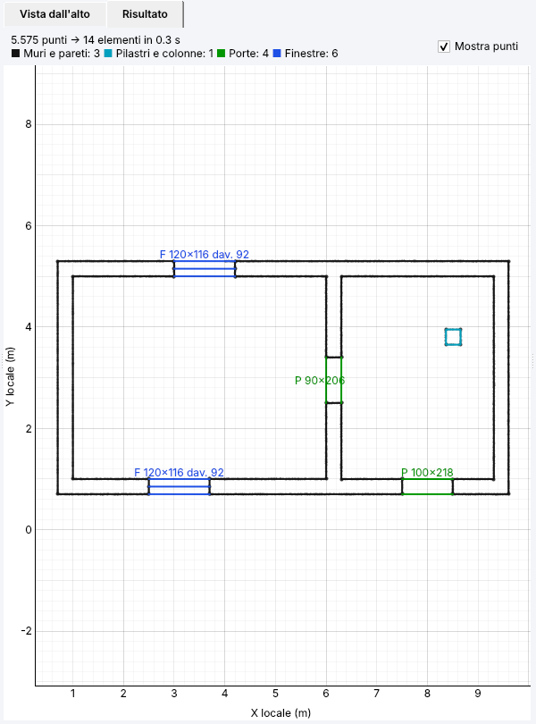
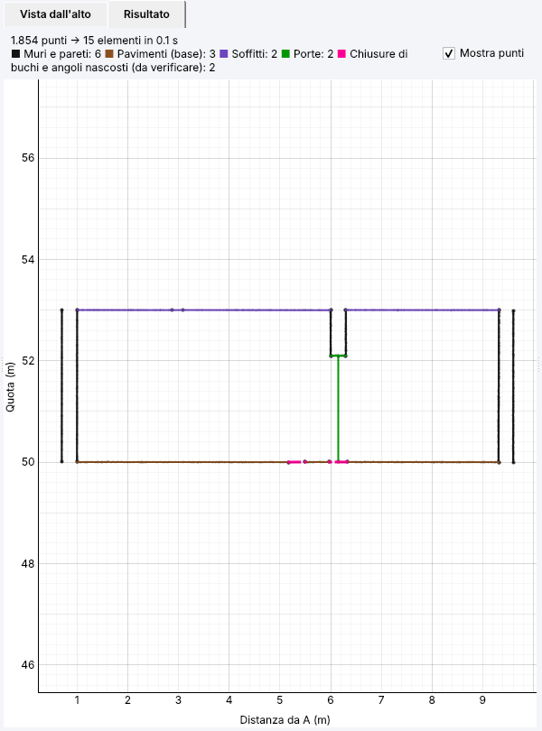
Le stanze si chiudono da sole
Dove mobili, armadi o ombre nascondono un pezzo di muro o un angolo, il programma richiude la stanza
(fino a 1 m). Fino a 10 cm la chiusura è considerata sicura e va nel layer dei muri. Le chiusure più
lunghe vanno nel layer 00_chiusure_da_verificare: a schermo sono rosa
tratteggiate, nel DXF hanno un colore proprio. Vanno sempre guardate in CAD: di solito sono
giuste, ma lì il muro non è stato rilevato.
Il programma guarda anche la densità dei punti di ogni muro: vicino allo scanner ci sono milioni di punti, sulle pareti lontane (anche a 50 m) molti meno. I piccoli vuoti tra punti radi non vengono scambiati per buchi.
9. Porte e finestre
In pianta un vano è un'interruzione che c'è su tutte e due le facce del muro, nello stesso punto. Per ogni vano il programma fa da solo una sezione verticale nella nuvola 3D e misura:
- il pavimento e il soffitto della stanza;
- il punto più basso del vuoto: se è al livello del pavimento è una porta, se è più in alto è il davanzale di una finestra;
- il punto più alto del vuoto, cioè l'architrave.
Accanto al vano scrive le misure: P 90×210 = porta larga 90 cm e alta 210;
F 120×120 dav. 90 = finestra 120×120 con davanzale a 90 cm dal pavimento. La precisione è di qualche
centimetro: per le misure di progetto controlla in CAD o in sezione.
Se un muro è stato rilevato da un solo lato (per esempio un muro esterno visto solo da dentro), il vano si riconosce lo stesso: il programma guarda nella nuvola 3D se sopra il buco c'è l'architrave e sotto il davanzale o il pavimento, e che davanti non ci sia un mobile. Per le finestre strombate la larghezza scritta è la luce netta, nel punto più stretto.
In sezione le porte si riconoscono dall'architrave con il pavimento sotto, anche con l'anta chiusa; le finestre dall'architrave con il davanzale sotto.
10. Passo 4 – Tagli, nomi ed esportazione DXF
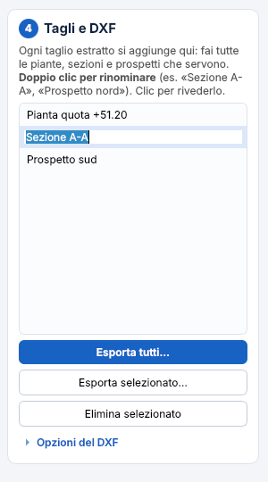
- Ogni taglio si aggiunge all'elenco a destra: puoi fare tutte le piante, sezioni e prospetti che servono, uno dopo l'altro.
- Nomi proposti: «Pianta quota +51.20», «Sezione 1», «Sezione 2», «Prospetto nord»…
- Doppio clic su un nome per rinominarlo (es. «Sezione A-A», «Prospetto via Roma»), poi Invio.
- Clic su un taglio per rivederlo nella scheda Risultato.
- Esporta tutti…: scegli una cartella e il programma salva un file DXF per ogni taglio,
con il suo nome (es.
Rilievo_Sezione A-A.dxf). - Esporta selezionato…: salva solo il taglio scelto.
- Elimina selezionato: toglie un taglio venuto male; poi lo rifai.
Opzioni del DXF
| Opzione | Significato |
|---|---|
| Polilinee unite | Attiva (consigliato): ogni contorno è una polilinea unica. Disattiva: linee e archi separati. |
| Includi i punti della fetta | Mette anche i punti della nuvola tagliata in un layer a parte, utile per il controllo in CAD (file più pesante). |
| Pianta alla quota reale | Le linee della pianta stanno alla quota del taglio invece che a quota 0. |
Le piante hanno le coordinate reali del rilievo: si sovrappongono alle altre piante e al rilievo topografico. Il DXF è in metri (AutoCAD 2010). I nomi dei layer si possono adattare al vostro standard da Altro ▾ → Nomi dei layer….
11. Tabià e strutture in legno
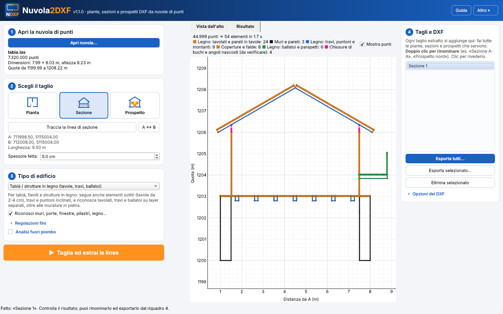
Scegli il tipo Tabià / strutture in legno. Il programma:
- segue gli elementi sottili: una tavola da 2-4 cm diventa due linee (le due facce);
- segue anche le linee inclinate (puntoni, falde, saettoni), non solo quelle orizzontali e verticali;
- divide il legno in layer:
00_legno_tavolati(pareti in tavole, solai in tavole),00_legno_travi(travi viste in sezione, puntoni),00_legno_ballatoi(ballatoi e parapetti fuori dal filo dei muri); l'assito del tetto resta in00_coperture; - le murature in pietra del basamento restano in
00_muri.
12. Il lavoro in CAD: cosa controllare
| Layer | Contenuto | Controllo |
|---|---|---|
00_muri | Muri e pareti | Spigoli e innesti. |
00_chiusure_da_verificare | Buchi e angoli nascosti richiusi oltre 10 cm | Sempre: confermali (spostali in 00_muri) o correggili. |
00_porte, 00_finestre | Vani con le misure scritte | Che porte e finestre non siano scambiate (es. porta-finestra). |
00_pilastri | Pilastri e colonne | Piccoli elementi chiusi scambiati per pilastri (es. una cappa). |
00_pavimenti, 00_soffitti, 00_solai | Orizzontamenti in sezione | Quote. |
00_coperture, 00_volte_archi, 00_aggetti | Falde, archi, balconi e cornici | Forme curve. |
00_legno_… | Tavolati, travi, ballatoi | Elementi in legno con murature allineate. |
00_arredi | Armadi, frigoriferi, librerie riconosciuti con la nuvola 3D (non arrivano al soffitto) | Che non ci sia finito un muro basso; il muro dietro è richiuso in 00_muri o 00_chiusure_da_verificare. |
00_altro | Persone di passaggio, piccoli oggetti isolati | Di solito si cancella. |
00_locali | Contorni chiusi delle stanze con nome e superficie | Nomi delle stanze (rinominale in CAD). |
00_info | Note: file, quota, linea A-B, impostazioni | Da tenere: dice come è stato fatto il disegno. |
Il programma si sbaglia soprattutto su arredi addossati ai muri (armadi, cucine), vegetazione e persone rilevate durante la scansione: sono tutti punti che sembrano muri.
13. Regolazioni fini
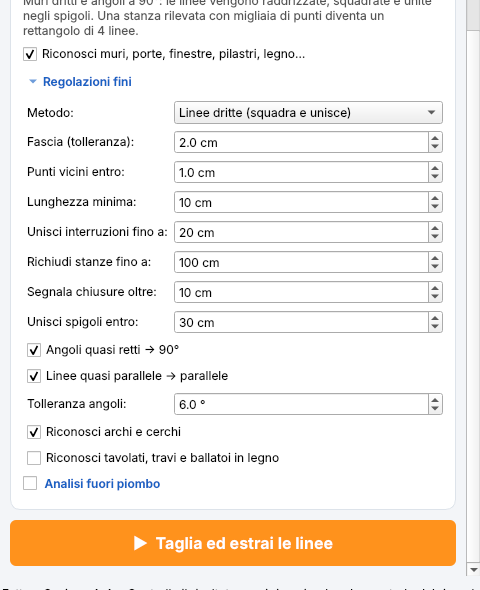
Di solito non servono. Se il risultato non va bene, cambiane una alla volta e rifai il taglio:
| Regolazione | Cosa fa | Quando cambiarla |
|---|---|---|
| Fascia (tolleranza) | Quanto i punti possono scostarsi dalla linea (2 cm) | Linee spezzettate su muri irregolari → aumenta. Tavole o elementi sottili → riduci (0,8 cm). |
| Punti vicini entro | Oltre alla fascia, prende i punti entro questa distanza da un punto della linea (1 cm) | Nuvola rumorosa (pareti lontane) → 1,5-2 cm. |
| Lunghezza minima | I tratti più corti vengono ignorati (10 cm) | Trattini su arredi, vegetazione → aumenta. |
| Unisci interruzioni fino a | Vuoti lungo una stessa linea uniti in un solo tratto (20 cm) | Tenerlo sotto la larghezza delle porte. |
| Richiudi stanze fino a | Angoli e buchi richiusi (100 cm) | Porte o passaggi chiusi per errore → riduci (es. 60 cm). 0 = mai. |
| Segnala chiusure oltre | Oltre questa lunghezza la chiusura va nel layer da verificare (10 cm) | Di solito lasciarlo così. |
| Unisci spigoli entro | Le linee si allungano fino all'angolo (30 cm) | Angoli non chiusi → aumenta. |
| Angoli → 90°, linee → parallele, tolleranza angoli | Squadratura | Edifici storici → disattiva. |
| Archi e cerchi | Riconosce archi e colonne (metodo «contorno libero») | Edifici storici. |
| Tavolati, travi e ballatoi | Riconoscimento del legno | Attivo nel tipo «Tabià». |
14. Analisi del fuori piombo
Facoltativa: spunta Analisi fuori piombo prima di estrarre. Per pareti e pilastri il programma misura la posizione reale della superficie ogni 25 cm di altezza rispetto alla verticale passante per la base. Nel DXF trovi la verticale teorica tratteggiata, il profilo reale ingrandito (es. 10 volte) e i valori in cm reali; accanto al DXF viene salvato un file CSV da aprire in Excel.
15. Problemi frequenti
| Problema | Cosa fare |
|---|---|
| Il programma non parte su Windows 7 («python312.dll») | Hai scaricato la versione per Windows 10: usa Nuvola2DXF-Windows7.exe. |
| La prima apertura è lentissima | È normale per file di molti GB: avviene una volta sola. Lascia lavorare il PC; nelle aperture successive è immediata. |
| «Nessun punto» | Quota di taglio fuori dall'edificio, linea A-B fuori dalla nuvola o riquadro verde troppo piccolo. |
| Una porta viene chiusa | Riduci «Richiudi stanze fino a» sotto la larghezza della porta, oppure correggi in CAD. |
| Una stanza resta aperta | L'apertura è più lunga di «Richiudi stanze» (1 m): aumentalo o chiudi in CAD. |
| Trattini su mobili o piante | Aumenta «Lunghezza minima» oppure limita l'area con il riquadro verde. |
| Linee spezzettate su muri irregolari | Prova il tipo «Prevalentemente dritto» o «Storico», oppure aumenta la fascia. |
| Una finestra risulta porta (o il contrario) | Succede se sotto il vano mancano punti (davanzale nascosto) o se c'è un arredo davanti: correggi il layer in CAD. |
| Le tavole di legno diventano una linea sola | Usa il tipo «Tabià» e una fetta di 2-3 cm. |
| Disco pieno | Altro ▾ → Svuota archivio temporaneo. |
16. Consigli per il rilievo
- Più stazioni dentro ogni stanza significano meno ombre e meno chiusure da verificare.
- Le pareti lontane dallo scanner hanno meno punti e più rumore: per le facciate fai stazioni vicine.
- Se possibile, apri le porte interne durante la scansione: il programma riconosce meglio i vani.
- Per i prospetti la nuvola deve contenere la facciata dall'esterno; per le sezioni servono punti sia sopra sia sotto i solai.
- Esporta la nuvola già registrata e georeferenziata: le piante manterranno le coordinate reali.
00_chiusure_da_verificare.